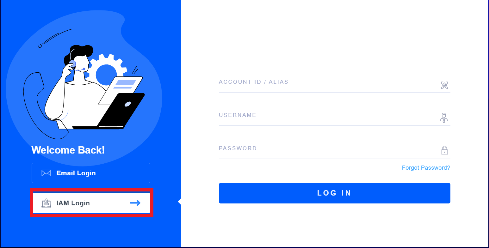

Task 1 - Repo Creation
Repo creation request
Request a new repo for your TECWorkshop (this will be referred to as your UserRepo)
- Send an email to fortinetcloudcse@fortinet.com to request a new GitHub repo and Jenkins Pipeline. Providing the following:
- Repo Name
- GitHub Usernames of collaborators
- Your Fortinet email address that you use to log in to FortiCloud
- Repo Name
- Behind the scenes, a script is used to create your TECWorkshop repo with appropriate protections, features, and collaborators. Additionally a Jenkins pipeline will be setup to monitor changes to the repo and run things like
- publishing the web site
- FortiDevSec scanning. To facilitate this, administrators will send you an application id that you must paste into fdevsec.yaml in order for the scans to run and tests to pass. Jenkins tests must pass in order for your feature branch to be merged into the main branch.
- Along with the FortiDevSec application id, you will also be sent an account number which you can use to navigate to the FortiDevSec console to view the results of your scan. To do so, head to FortiCloud and click IAM Login on the left hand side of the page. Enter the provided account number along with your FortiCloud login credentials. 
- You will use this repo to create and modify MD chapters & tasks to create your workshop Guide in Hugo format.
Repo Restrictions, Jenkins interactions, GitHub Actions
- The only approved method to create repos in FortinetCloudCSE org is via request to mailto:fortinetcloudcse@fortinet.com
- You can clone UserRepo into your own GitHub Account, but not into FortinetCloudCSE
- Only Authorized collaborators and admins are allowed to push to repos in FortinetCloudCSE org
- We require pushes be made to a feature branch
- Upon push to feature branch:
- Jenkins clones the repo into its workspace on EC2 and runs FortiDevSec Scan which performs
- SAST Scan
- check for vulnerabilities in code, 3rd party libraries, and libraries pulled into Dockerfile
- secrets scan
- IaC Scan for misconfig
- GitHub Pages deploys only on the main branch.
- Requirements for merging feature to main branch:
- FortiDevSec Tests Pass
- PR request submitted and approved by FortiCloudCSE admins (manual intervention)
- Jenkins clones the repo into its workspace on EC2 and runs FortiDevSec Scan which performs
Git repo setup
-
Once your TECWorkshop repo is created, clone the repo and change your working directory to the cloned repo
git clone <provided link> cd <cloned repo directory> -
The first thing you’ll want to do with the repo is create a Feature branch. There are branch protections in place on the repo preventing you from pushing to main, so you’ll have to follow our workflow described in Ch3
git checkout -b Feature-<userid>-<shortDescr>- You’re now working in a local branch so you can proceed to building Hugo content
MVP0 (LEGACY STEPS only do this if MVP1 steps don’t work)
Info
You won’t be able to clone this repo into the FortinetCloudCSE Org, so using this route, you’ll have to clone to your own repo
Step 1 Clone this git repo
git clone https://github.com/FortinetCloudCSE/UserRepo.git